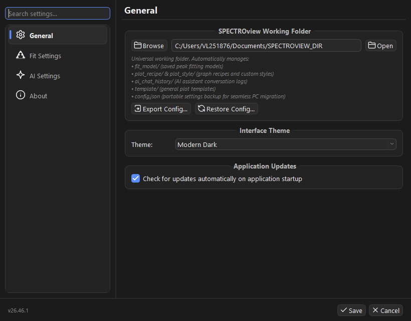

Paramètres
Paramètres et préférences (Settings)¶
Ouvrez le menu Settings via l'icône d'engrenage dans la barre d'outils principale (ou appuyez sur Ctrl + Shift + S). Vous pouvez également cliquer sur About SPECTROview dans la barre de menu supérieure pour accéder directement à la section About.

Le panneau Settings Panel propose une interface moderne à deux volets avec filtrage instantané par recherche :
- Barre latérale gauche :
- Barre de recherche : Saisissez n'importe quel mot-clé (par exemple
working folder,theme,language,langue,tolerance,loss,mcp,python,citation) pour filtrer instantanément la liste de navigation et surligner les options correspondantes sur la page avec défilement automatique. - Onglets de navigation :
- General — Dossier de travail SPECTROview (
Working Folder), thème de l'interface, langue de l'interface, sauvegarde/restauration portable de la configuration et préférences de mise à jour. - Fit Settings — Paramètres de convergence de l'optimiseur, fonction de perte robuste, polarité des pics et limites globales des pics (avec icône dédiée à l'ajustement de courbes).
- AI Settings — Identifiants des fournisseurs LLM, test de connexion et serveur MCP local.
- About — Version de l'application, numéro de build, environnement Python, versions des dépendances d'exécution, documentation et citation.
- General — Dossier de travail SPECTROview (
- Zone de contenu droite : Affiche toutes les options de l'onglet sélectionné. Tous les textes informatifs, détails d'environnement et citations peuvent être sélectionnés à la souris pour être copiés facilement.
- Pied de page : Affiche la version de l'application ainsi que les boutons standard Save et Cancel.
Synchronisation du thème : Le thème de l'interface peut être sélectionné soit dans l'onglet General (
Modern Dark,Modern Gray,Modern Light,Classic DarkouClassic Light), soit directement via le bouton Theme de la barre de menus supérieure. Les deux sélecteurs sont synchronisés en temps réel.
1. Dossier de travail SPECTROview et préférences (onglet General)¶
Définissez un dossier racine unique pour l'ensemble des modèles, recettes, styles, historiques de discussion IA et sauvegardes de configuration de SPECTROview. Lors de sa définition, cinq sous-dossiers et un fichier de configuration portable y sont créés automatiquement :
| Sous-dossier / Fichier | Contenu |
|---|---|
fit_model/ |
Modèles d'ajustement personnalisés (JSON). Fit Model Builder scanne ce dossier et liste chaque modèle pour une réutilisation en un clic. |
plot_recipe/ |
Recettes de tracé (Plot Recipes) — ensembles sauvegardés de configurations complètes (liaisons de données + style) pour l'espace Graphs. |
plot_style/ |
Modèles de style (Style Templates) — styles d'apparence uniquement applicables à n'importe quel graphique existant. |
ai_chat_history/ |
Journaux de conversations IA (JSON). Les échanges y sont enregistrés automatiquement. |
template/ |
Modèles généraux de tracés et d'espaces de travail. |
config.json |
Sauvegarde portable de la configuration. Les paramètres non confidentiels de l'application y sont reflétés. |
- Cliquez sur Browse pour sélectionner un dossier, ou saisissez directement le chemin.
- Cliquez sur Open pour ouvrir directement le dossier configuré dans l'Explorateur Windows ou le Finder macOS en un clic.
Sécurité des identifiants : Les clés API des fournisseurs d'IA saisies dans Settings sont stockées dans le magasin privé de configuration par utilisateur de votre système d'exploitation (
QSettingssous un espace de noms interne obfusqué) sous Windows, macOS et Linux, et sont strictement exclues des sauvegardesconfig.json. Cela évite les fenêtres répétées du Trousseau / KWallet tout en empêchant la fuite accidentelle d'identifiants sensibles si vous partagez ou versionnez votre dossier de travail.Sauvegarde et migration vers un autre PC : Si vous changez d'ordinateur ou souhaitez effectuer une sauvegarde, copiez simplement ce seul dossier de travail sur le nouvel appareil. Dans le panneau Settings de SPECTROview sur la nouvelle machine, faites pointer SPECTROview Working Folder vers ce dossier : tous vos modèles d'ajustement, recettes, styles, historiques IA et la configuration (
config.json) seront restaurés automatiquement !Vous pouvez également utiliser les boutons Export Config... et Restore Config... à tout moment pour exporter ou restaurer les réglages via un fichier JSON autonome.
Thème de l'interface¶
- Theme : Choisissez entre Modern Dark, Modern Gray (par défaut), Modern Light, Classic Dark ou Classic Light. Le choix met immédiatement à jour le thème actif et reste synchronisé avec le bouton de la barre de menus supérieure. Le thème du canevas des graphiques est indépendant du thème de l'interface et utilise par défaut Light Mode ; vous pouvez le basculer en Dark Mode à tout moment via le sélecteur Plot theme dans la barre
View Optionssous le canevas des spectres (votre choix est conservé entre les sessions).
Langue de l'interface¶
- Language : Choisissez entre English (par défaut) et Français. Le changement s'applique instantanément à toute l'application — menus, espaces de travail, visionneuses, boîtes de dialogue, libellés de graphiques scientifiques et panneau de discussion IA — sans redémarrage. Cliquer sur Cancel (Annuler) rétablit automatiquement la langue précédemment enregistrée. Le choix est persisté entre les sessions via
QSettingsetconfig.json, et le bouton Open User Manual (Ouvrir le manuel utilisateur) ouvre automatiquement la documentation anglaise (/user_manual/) ou française (/fr/user_manual/) correspondante.
Mises à jour de l'application¶
- Check for updates automatically on application startup : Lorsqu'elle est cochée (par défaut), SPECTROview interroge périodiquement GitHub Releases en arrière-plan au démarrage (avec mise en cache HTTP
ETag) en tenant compte de votre type d'installation (pip, installateur Windows, ZIP portable, DMG macOS, AppImage Linux ou.deb). - Include pre-release / release candidate builds : Lorsqu'elle est cochée, les vérifications incluent également les préversions (telles que
-rc.1ou-beta). Désactivée par défaut afin que la majorité des utilisateurs ne reçoivent que les versions stables.
2. Paramètres de convergence d'ajustement (onglet Fit Settings)¶
Ces paramètres contrôlent le comportement du moteur Vectorized Batch Fit (VBF) — l'optimiseur mathématique qui ajuste vos spectres. Les modifier influe directement sur la vitesse de calcul, la précision et la convergence.
- Reset to Default : Cliquez sur le bouton Reset all fit settings to default en haut de l'onglet pour restaurer instantanément tous les paramètres de convergence et limites globales de pics à leurs valeurs d'usine.
| Paramètre | Clé | Défaut | Plage | Description et comportement |
|---|---|---|---|---|
| Maximum Iterations | max_ite |
200 | 10 – 10 000 | Nombre maximal d'itérations de Levenberg-Marquardt par spectre. • Faible (50–100) : Ajustement plus rapide pour les aperçus. • Élevé (200+) : Meilleure convergence pour les spectres complexes. |
| x-tolerance | xtol |
1×10⁻⁴ | 1×10⁻¹⁰ – 1.0 | Tolérance relative sur le pas des paramètres. La convergence requiert : mean( |
| f-tolerance | ftol |
1×10⁻⁴ | 1×10⁻¹⁰ – 1.0 | Tolérance relative sur la fonction de coût. La convergence requiert : |
| Noise Threshold Coefficient | coef_noise |
0.0 | 0.0 – 10.0 | Multiplicateur du niveau de bruit estimé automatiquement (coef_noise × amplitude de bruit estimée). Masque les données bruitées et supprime les pics fantômes.• 0.0 : Désactivé (par défaut) • 0.5–1.0 : Conservateur • 1.0–2.0 : Modéré • 3.0+ : Agressif Remarque : Vous pouvez consulter le niveau de bruit affiché dans la barre d'outils ou activer la case « Show noise level » dans les View Options de SpectraViewer pour visualiser ce seuil directement sur le tracé. |
| Loss Function | loss |
linear |
linear, soft_l1, huber |
Fonction de perte robuste pour résister aux points aberrants (rayons cosmiques, artefacts aigus). • linear : Moindres carrés standard (par défaut). • soft_l1 : Approximation L1 lisse \(\rho(z) = 2(\sqrt{1+z}-1)\), robuste aux pics parasites intenses sans masquage manuel. • huber : Perte de Huber, quadratique pour les points valides et linéaire au-delà de f_scale. |
| Loss Scale | f_scale |
1.0 | 0.01 – 100.0 | Échelle de marge séparant les points valides des points aberrants pour les fonctions robustes. Les résidus sont mis à l'échelle comme \((r / f\_scale)\) avant d'évaluer \(\rho'(z)\). |
| Fit Negative Values | fit_negative |
Décochée | - | Lorsqu'elle est cochée, les intensités négatives (pics d'absorption ou inversés) participent à l'ajustement. Lorsqu'elle est décochée, un poids nul leur est attribué. |
Remarque : Un spectre n'est considéré comme convergé que lorsque les deux critères
xtoletftolsont satisfaits simultanément.Ordre de composition des poids : Les exclusions strictes (
fit_negativeet le plancher de bruitcoef_noise) sont évaluées en premier pour affecter un poids nul aux points exclus. Pour les points actifs, la pondération robuste (soft_l1ouhuber) est appliquée en second afin d'atténuer progressivement les résidus aberrants par moindres carrés itérativement repondérés (IRLS).
3. Limites globales des pics (onglet Fit Settings)¶
Ces paramètres définissent des conditions aux limites absolues appliquées globalement à tous les pics dans l'application. Lorsque vous ajoutez un pic à un modèle d'ajustement, ces limites initialisent automatiquement ses bornes de paramètres.
Remarque : Vous pouvez cocher l'option « Limits » sous
PeakTablepour afficher les bornes effectives de chaque pic.
| Limite | Défaut | Plage | Description et contrainte |
|---|---|---|---|
| Max Peak Shift | 20 | 0 – 100 | Déplacement maximal autorisé pour le centre d'un pic (x0) par rapport à sa valeur initiale.x0 - maxshift ≤ x0fitted ≤ x0 + maxshift |
| Min Peak FWHM | 0.1 | 0.01 – 500 | Largeur à mi-hauteur minimale autorisée (FWHM). Empêche les pics de s'effondrer en fonctions de Dirac. |
| Max Peak FWHM | 200 | 1 – 1 000 | Largeur à mi-hauteur maximale autorisée (FWHM). Empêche les pics de s'étaler en lignes de base plates. |
4. Paramètres IA (onglet AI Settings)¶
L'onglet AI Settings configure l'agent conversationnel IA. Rien n'y est obligatoire pour utiliser le reste de SPECTROview.
Clés API¶
Les champs correspondant à un point d'accès Custom (compatible OpenAI) sont affichés par défaut :
| Champ | Description |
|---|---|
| Custom API Key | Clé API de votre serveur personnalisé ou interne. |
| Base URL | URL racine compatible OpenAI du serveur (par exemple https://host/v1). |
| Model Name | Liste de noms de modèles séparés par des virgules (par exemple model-a, model-b). Ces noms alimentent la liste déroulante du panneau de chat — pratique pour les serveurs qui ne proposent pas d'API de listage des modèles. |
| Display Label | Libellé affiché dans l'éditeur de discussion IA pour ce point d'accès personnalisé. |
Les clés des fournisseurs cloud intégrés sont regroupées dans la section repliable ▸ Other cloud providers (cliquez pour déplier) : OpenAI, Anthropic, Gemini, DeepSeek et Mistral. Toutes les clés sont stockées de manière masquée et conservées entre les sessions.
- Test Connection : Sélectionnez n'importe quel fournisseur dans la liste et cliquez sur Test Connection pour vérifier la disponibilité du point d'accès, les identifiants et la connectivité réseau sans enregistrer.
Où vos clés sont stockées : Les clés API sont enregistrées dans le magasin de paramètres par utilisateur de votre système d'exploitation (obfusqué sous
_credentials/) — le Registre (HKEY_CURRENT_USER\Software\CEA-Leti\SPECTROview) sous Windows,~/Library/Preferencessous macOS, ou~/.config/CEA-Leti/SPECTROview.confsous Linux. Elles ne sont jamais écrites dans un fichier du dossier de projet SPECTROview, ne sont pas incluses dans les exports d'espace de travail ou sauvegardes de configuration, et ne peuvent pas être ajoutées par erreur à un dépôt Git.
Serveur MCP local¶
N'activez cette option que lorsqu'un client MCP de confiance exécuté sur la même machine doit accéder à la session SPECTROview en cours. Le point d'accès par défaut est http://127.0.0.1:8765/mcp et démarre dès que vous cliquez sur Save.
| Champ | Défaut | Description |
|---|---|---|
| Enable local MCP endpoint | Désactivé | Démarre ou arrête le serveur MCP intégré. |
| Port | 8765 | Port HTTP Streamable local (1024–65535). Choisissez-en un autre si ce port est occupé. |
L'adresse d'écoute est strictement fixée sur localhost (127.0.0.1) ; le serveur n'est pas exposé sur le réseau local ni sur Internet. Laissez SPECTROview ouvert pendant que le client est connecté.
5. À propos et environnement (onglet About)¶
L'onglet About fournit des informations complètes d'exécution et de référence :
- Détails de l'application : Logo officiel SPECTROview, titre, numéro de version (
Version {VERSION}) et numéro de build (Build: {BUILD_NUMBER}). -
Environnement et dépendances : Détecte automatiquement le mode d'exécution et de packaging (
Python Package (.whl / local),Windows Installer (Velopack),Windows Portable,macOS Application (.app),Linux AppImageouLinux Debian Package (.deb)) et affiche les versions des dépendances : -
Versions autonomes (Standalone) : Affichent l'instantané figé des dépendances enregistré lors du packaging, ainsi que les informations sur Python intégré et le système hôte/de build.
- Paquet installé (
.whl/pip/ Dev) : Inspecte dynamiquement les versions actives dans l'environnement Python local. - Répertorie
PySide6(avec la version du runtime Qt), la pile TLS et sécurité (certifi,truststore), la pile scientifique (numpy,scipy,matplotlib,pandas,pybaselines), les moteurs d'export (openpyxl,pyarrow), les extensions UI (superqt) et les SDK IA. - Check for Updates : Action directe pour vérifier la disponibilité de nouvelles versions sur GitHub Releases.
- Citation de l'article : La référence officielle de l'article évalué par les pairs dans SoftwareX avec son DOI, accompagnée d'un bouton Copy pour la copier instantanément dans le presse-papiers.